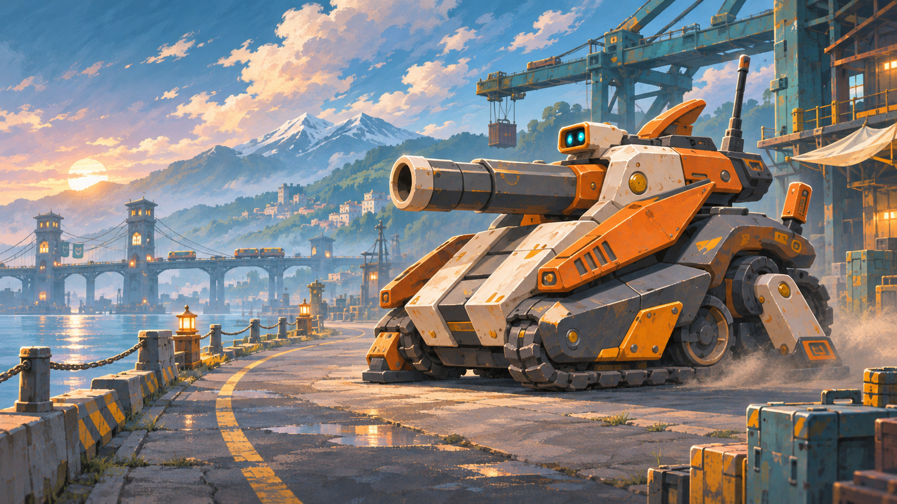

10機の、その姿で。
ガンの重い主砲、ヒバリの長いセンサー、ユイの大きなアーム。10機の原画が、仲間の紹介と出会いの画面に加わりました。
10機を見る →
姿と名前を、一緒に。
10枚を配色・機体形状・武装と照合し、正式な名前・役割・モットー、実際の所有・編成状態と対応させました。長い砲身やセンサー、アームも収まる構図へ調整しています。
出会いの時間を、そのままに。
新しい仲間の原画にも、それぞれの紹介演出を使います。演出のスキップ、日英の切り替え、編成するか今の機体で続けるかの選択も引き続き使えます。
今回、攻略記録は戻りません。
進行・所有・既読・持ち物を引き継ぎます。100面、能力、射撃や移動、戦闘中の機体描画も保持しています。ダウンロードするオフラインHTMLは、通信不要のゲーム内デザインで表示します。